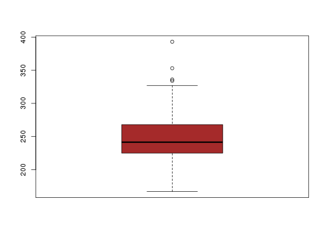

Data for Exercises 1.55, 1.75, 3.69, and 5.60
A data frame with 62 observations on the following variable.
Kitchens, L. J. (2003) Basic Statistics and Data Analysis. Duxbury
str(Framingh)#> 'data.frame': 62 obs. of 1 variable: #> $ cholest: int 393 353 334 336 327 300 300 308 283 285 ... #>attach(Framingh) stem(cholest)#> #> The decimal point is 1 digit(s) to the right of the | #> #> 16 | 7 #> 18 | 428 #> 20 | 020125678 #> 22 | 05560000122244668 #> 24 | 03678444668 #> 26 | 34777800288 #> 28 | 35 #> 30 | 008 #> 32 | 746 #> 34 | 3 #> 36 | #> 38 | 3 #> #>hist(cholest,prob=TRUE,ylim=c(0,.012))lines(density(cholest))boxplot(cholest,col="brown")sum(cholest>200&cholest<240)/length(cholest)#> [1] 0.4032258 #>detach(Framingh)